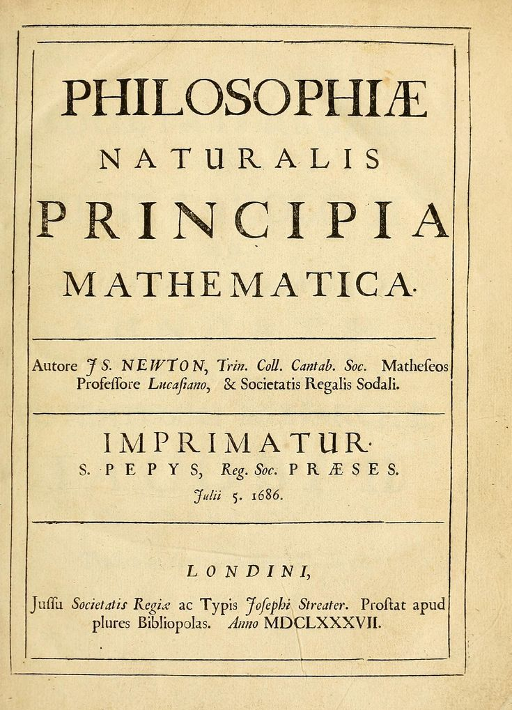

Who Was Bertrand Russell? British Philosopher and Analytic Philosophy Founder
Bertrand Russell was a British philosopher, logician, mathematician, and public intellectual who lived from 1872 to 1970. He is remembered as one of the most influential figures in the development of modern analytic philosophy, particularly for his revolutionary contributions to logic, the philosophy of mathematics, epistemology, metaphysics, and the analysis of language. Born into an aristocratic British family, Russell eventually became an internationally recognized intellectual whose work connected highly technical questions in mathematical logic with wider debates about knowledge, reality, religion, ethics, politics, war, and human freedom.
Russell's early philosophical importance was closely connected with his attempt to make philosophy more precise through logical analysis. Working alongside thinkers such as G. E. Moore and drawing significantly on the earlier logical work of Gottlob Frege, Russell challenged the idealist traditions that had strongly influenced British philosophy in the nineteenth century. He argued that philosophical problems could often be clarified by examining the logical structure of propositions, concepts, and arguments. His famous theory of descriptions became an important example of this approach, showing how apparently simple statements in ordinary language can contain complex logical structures.
Russell is also famous for Principia Mathematica, the monumental work he co-authored with Alfred North Whitehead. Published in three volumes between 1910 and 1913, the project attempted to establish the foundations of mathematics through formal logic, a position associated with logicism. Although later results in mathematical logic demonstrated important limitations for the strongest versions of this foundational program, Principia Mathematica remains a landmark in the history of logic. Russell's investigations into sets, classes, propositions, relations, and mathematical foundations also contributed to the development of modern analytic philosophy and influenced later work in logic and computer science.
Beyond his technical achievements, Russell became one of the most recognizable public intellectuals of the twentieth century. He wrote extensively for non-specialist audiences about philosophy, science, religion, morality, education, politics, and society, believing that philosophical reasoning should not remain confined to academic specialists. His public positions were frequently controversial. He opposed the First World War, became involved in later campaigns against nuclear weapons, and repeatedly criticized dogmatism, authoritarianism, and intellectual conformity. His public philosophy therefore cannot be separated completely from his wider commitment to reason, skepticism, intellectual freedom, and humane social institutions.
Bertrand Russell's historical significance ultimately comes from the unusual combination of technical philosophy and public engagement that characterized his life. He helped transform twentieth-century analytic philosophy, made foundational contributions to mathematical logic, influenced generations of philosophers including Ludwig Wittgenstein, and became an influential critic of religion, war, political oppression, and intellectual dogmatism. His long career also demonstrates how philosophy can operate at several levels at once: as formal investigation, conceptual analysis, scientific inquiry, ethical reflection, and public criticism. For these reasons, Russell remains a central figure in the history of modern philosophy.
Bertrand Russell: Quick Facts, Philosophy, Works, and Legacy
- Name — Bertrand Russell
- Period — 1872–1970
- Born in — Trellech, Monmouthshire, Wales
- Associated with — Analytic philosophy and logicism
- Known for — Principia Mathematica and the theory of descriptions
- Major works — Principia Mathematica, The Problems of Philosophy, A History of Western Philosophy
- Major honor — Nobel Prize in Literature, 1950
- Key collaborator — Alfred North Whitehead, co-author of Principia Mathematica
- Notable student — Ludwig Wittgenstein
- Later activism — Pacifism and nuclear disarmament
Bertrand Russell was born in 1872 and died in 1970, giving him an exceptionally long intellectual career that extended across major transformations in mathematics, philosophy, science, and international politics. He was born at Trellech in Monmouthshire, Wales, and belonged to a prominent British aristocratic family. His early education and later studies at Trinity College, Cambridge provided the mathematical and philosophical foundations for his later work. Cambridge subsequently became one of the most important institutional settings for the emergence of the analytic tradition with which Russell is so strongly associated.
Russell is most closely identified with analytic philosophy, a philosophical tradition that places particular emphasis on logical clarity, argumentation, conceptual precision, and the analysis of language and propositions. His development of logical techniques was closely connected with his work in the foundations of mathematics and his engagement with Frege's logic. Russell's logicism sought to show that mathematics could be grounded in logical principles, making the relationship between mathematics and logic one of the central philosophical questions of his early career.
Among Russell's best-known works is Principia Mathematica, written with Alfred North Whitehead and published from 1910 to 1913. Other important books include The Problems of Philosophy, which introduced philosophical questions about knowledge and reality to a general audience, and A History of Western Philosophy, which became one of his most widely read works. His writings covered far more than logic, extending into ethics, political philosophy, philosophy of religion, education, social criticism, and the relationship between science and human values.
Russell was also an important teacher and intellectual influence on later philosophers. Ludwig Wittgenstein came to Cambridge partly because of Russell's reputation and became closely associated with him during the early development of analytic philosophy. Russell's own philosophical positions changed considerably over time, however, and his influence cannot be reduced to a single fixed doctrine. His work instead represents a continuing investigation into logic, language, knowledge, reality, and the possibilities and limits of rational inquiry.
In the later part of his life, Russell became increasingly prominent as a public campaigner for peace and nuclear disarmament. His political and social writings made him an important public intellectual as well as an academic philosopher. In 1950, he received the Nobel Prize in Literature in recognition of his extensive writings and advocacy of humanitarian ideals. His combination of philosophical scholarship, scientific reasoning, literary communication, and public activism explains why Bertrand Russell remains one of the most recognizable philosophers of the twentieth century.
Bertrand Russell and the Rise of Analytic Philosophy

Bertrand Russell's philosophical career developed during a major transformation in British philosophy. During the nineteenth century, forms of British idealism associated with thinkers such as F. H. Bradley and Bernard Bosanquet had exerted substantial influence in British universities. Russell and G. E. Moore increasingly rejected important aspects of this idealist framework and argued for greater precision in philosophical argument. Their reaction helped establish an alternative approach that emphasized propositions, logical structure, conceptual distinctions, and the possibility of philosophical analysis grounded in rigorous argument rather than comprehensive idealist systems.
The emergence of analytic philosophy was closely connected with developments in modern symbolic logic. Russell became deeply interested in the work of the German mathematician and logician Gottlob Frege, whose Begriffsschrift and later investigations into the logical foundations of arithmetic provided crucial resources for the new logical approach. Russell's discovery of a contradiction in Frege's foundational system, now known as Russell's paradox, became one of the defining episodes in the history of modern logic. The paradox demonstrated that seemingly straightforward assumptions about sets or classes could generate profound logical difficulties.
Russell responded to foundational problems in mathematics through an increasingly sophisticated theory of types and through his broader logicist program. His collaboration with Alfred North Whitehead eventually produced Principia Mathematica, an extraordinarily ambitious attempt to construct mathematics on a logical foundation. The project demonstrated the power of formal methods while also revealing how technically demanding foundational questions could become. Russell's work therefore helped connect philosophy with developments in mathematics and formal logic in a way that profoundly influenced twentieth-century intellectual history.
Russell's approach also transformed the philosophical understanding of language. Instead of assuming that the grammatical form of an ordinary sentence automatically reveals its logical form, he argued that philosophical analysis could uncover distinctions hidden by everyday linguistic expression. His theory of descriptions, developed most famously in his 1905 article "On Denoting," showed how definite descriptions could be analyzed without treating every grammatical noun phrase as naming an independently existing object. This became one of the most influential examples of how logical analysis could be applied directly to traditional metaphysical problems.
Russell's importance to the history of analytic philosophy therefore extends beyond any single theory. His work helped establish a style of philosophy centered on clarity, formal reasoning, conceptual distinctions, and careful examination of language. Later philosophers, including Wittgenstein, developed their own positions partly in response to problems Russell had helped formulate. Analytic philosophy subsequently became one of the dominant traditions in English-speaking academic philosophy, and Russell's contributions to logic, language, epistemology, and metaphysics remain central to understanding how that transformation occurred.
Bertrand Russell's Early Life and Education at Cambridge
Bertrand Russell was born on 18 May 1872 at Trellech in Monmouthshire, Wales, into a prominent aristocratic British family. His parents died when he was very young, and he was subsequently raised under the guardianship of his grandparents. His grandfather, John Russell, had been a major British political figure and had served as Prime Minister. Russell's childhood was therefore shaped by both privilege and personal isolation, while the strict religious atmosphere of his household contributed to the questions about religion, morality, and certainty that would occupy him throughout his intellectual life.
Russell's early intellectual development was unusually mathematical. As a young man he became deeply interested in geometry, mathematics, philosophy, and the problem of whether human knowledge could possess genuine certainty. He eventually entered Trinity College, Cambridge, where his mathematical abilities became especially important to his academic development. His Cambridge education exposed him to influential philosophical debates and introduced him to a community of thinkers who were beginning to question the idealist assumptions dominant within British philosophy.
At Cambridge, Russell initially encountered forms of idealist philosophy, but his intellectual outlook changed substantially through his association with G. E. Moore. Moore's emphasis on common sense, conceptual distinctions, and the possibility of objective truth reinforced Russell's growing opposition to idealist metaphysics. Their intellectual relationship became important in the emergence of the new analytic style of philosophy. Russell increasingly sought to replace vague or overly comprehensive philosophical constructions with arguments that could be examined proposition by proposition.
Russell's mathematical education also prepared him for his later engagement with the foundations of mathematics. During this period he became increasingly concerned with the relationship between mathematics and logic, a question that eventually led him toward the logicist program and his engagement with Frege's work. His interest was not merely technical. Russell believed that examining the logical foundations of mathematical knowledge could reveal important truths about the nature of reasoning itself. Mathematics therefore became both a field of study and a route into fundamental philosophical questions concerning certainty, knowledge, and reality.
Russell's Cambridge years established the intellectual foundations for the remarkable career that followed. His training combined mathematics with philosophy at a moment when symbolic logic and the foundations of mathematics were undergoing major transformation. The relationships he formed at Cambridge, particularly with Moore and later with Whitehead, helped shape his philosophical direction. By the beginning of the twentieth century, Russell had moved decisively toward a philosophy centered on logical analysis, realism, and the search for precise formulations of difficult philosophical problems.
Bertrand Russell's Academic Career, Public Life, and Nobel Prize
Bertrand Russell's academic career was closely connected with Cambridge University, where he studied and later taught, but his professional life was far from conventional. His philosophical work increasingly attracted attention beyond mathematics and academic philosophy because he addressed controversial questions about religion, morality, education, marriage, politics, and war. His willingness to express unpopular positions sometimes brought serious professional consequences. Russell's career therefore illustrates the unusual relationship between academic philosophy and public intellectual life in the twentieth century.
During the First World War, Russell became an outspoken critic of the conflict and supported conscientious objection to military service. His anti-war activities contributed to his dismissal from his Cambridge lectureship in 1916 and eventually resulted in a period of imprisonment in 1918 after he was convicted under wartime regulations. These events did not end his philosophical productivity. Instead, Russell continued writing on logic, philosophy, education, politics, and social questions, increasingly combining technical scholarship with arguments intended for a wider public audience.
Russell's academic and intellectual career subsequently included work at several institutions, including periods associated with Trinity College, Cambridge, and later appointments in the United States and Britain. His relationship with universities could be complicated because of his political and social views. In 1944 he returned to Trinity College, and his later decades brought increasing international recognition. Throughout these changes, Russell continued to publish at an extraordinary rate, producing both specialized philosophical works and accessible books designed to introduce philosophical ideas to general readers.
Russell's reputation as a public intellectual grew particularly strongly after the Second World War. He became an important critic of nuclear weapons and was involved in international campaigns for nuclear disarmament. In 1955, he was one of the signatories of the Russell-Einstein Manifesto, which warned about the dangers posed by nuclear warfare and called attention to the need for humanity to address the problem collectively. His later activism demonstrated that his philosophical commitment to reason and critical inquiry was connected, in his view, with urgent questions about the survival and future of human civilization.
In 1950, Russell received the Nobel Prize in Literature for his extensive and influential writings. The award recognized not simply his technical contributions to philosophy but the broader literary and humanistic importance of his work. Russell had succeeded in communicating complex philosophical ideas to audiences far beyond professional philosophers. His career therefore combined academic achievement, mathematical logic, philosophical analysis, literary writing, political criticism, and public activism, making him one of the most prominent intellectual figures of the twentieth century.
What Did Bertrand Russell Believe? Key Ideas in Russell's Philosophy
At the center of much of Bertrand Russell's philosophy is the method of logical analysis. Russell believed that philosophical confusion could frequently be reduced by examining the logical structure of propositions and distinguishing different questions that ordinary language might blur together. Rather than constructing a single comprehensive philosophical system, he often approached problems by breaking them into smaller questions that could be investigated with greater precision. This analytical method became a defining characteristic of the philosophical tradition that developed around early twentieth-century analytic philosophy.
One of Russell's most important projects was logicism, the attempt to establish mathematics on a foundation of logic. Together with Alfred North Whitehead, he pursued this program in Principia Mathematica. Russell's motivation was closely connected with his concern for certainty in mathematics and the logical structure underlying mathematical reasoning. The discovery of paradoxes in the foundations of mathematics showed that apparently simple assumptions could generate contradictions, making the logical analysis of mathematical concepts an urgent philosophical problem.
Russell also developed influential positions in epistemology, particularly concerning the distinction between knowledge by acquaintance and knowledge by description. He investigated how human beings can know objects, facts, and propositions and how far our knowledge can legitimately extend beyond immediate experience. His discussions of sense-data, perception, inference, and scientific knowledge were part of a broader attempt to understand the relationship between what appears to us and what we have reason to believe exists independently of our perceptions.
In metaphysics, Russell was interested in the analysis of reality into logically intelligible components. His work on relations, propositions, particulars, universals, and logical form developed substantially over time, and his views cannot be reduced to one unchanging doctrine. He was generally suspicious of metaphysical claims that could not be made sufficiently clear, but he did not believe that philosophy should simply abandon questions about reality. Instead, he sought to reform metaphysics by subjecting its concepts to rigorous logical examination.
Russell's philosophical outlook also included strong commitments to skepticism toward dogma, intellectual freedom, scientific inquiry, and critical reasoning. He wrote extensively about religion, ethics, politics, education, war, and human happiness, showing that his philosophy extended well beyond formal logic. Although his positions changed across different periods of his life, his recurring concern was to replace unsupported certainty with evidence, argument, and intellectual honesty. This combination of logical rigor and public engagement is a major reason Bertrand Russell remains so important to the history of modern philosophy.
Principia Mathematica: Bertrand Russell, Alfred North Whitehead, and the Foundations of Mathematics

Principia Mathematica is one of the most important works in the history of modern logic and the philosophy of mathematics. Written by Bertrand Russell and Alfred North Whitehead, the work was published in three volumes between 1910 and 1913. Its central ambition was closely connected with logicism: the attempt to show that mathematical truths could be derived from fundamental logical principles. Russell and Whitehead therefore sought to construct a rigorous formal framework in which mathematical concepts and proofs could be represented through logical notation and carefully controlled rules of inference.
The scale of the project was enormous because the authors could not simply assume the mathematical concepts whose foundations they were attempting to explain. They had to develop logical machinery capable of defining and deriving increasingly complex mathematical structures. The resulting work is famous for its highly technical notation and for the extraordinary length of its foundational demonstrations. The often repeated reference to the proof that 1 + 1 = 2 illustrates the project's method, although the significance lies less in the elementary equation itself than in the attempt to derive arithmetic within a formal logical system.
Principia Mathematica was partly a response to foundational crises in mathematics, including problems involving sets, classes, and logical contradiction. Russell's discovery of Russell's paradox had demonstrated that unrestricted assumptions about classes could produce contradiction. The theory of types developed in response was intended to prevent certain forms of self-reference that generated such paradoxes. These investigations made Russell a central figure in the development of twentieth-century mathematical logic and helped establish foundational questions about formal systems as a major area of philosophical and mathematical research.
The logicist program represented by Principia Mathematica did not ultimately provide an unrestricted reduction of all mathematics to logic. Later developments in mathematical logic, especially Kurt Gödel's incompleteness theorems, demonstrated profound limitations concerning what sufficiently powerful formal systems can prove about themselves. These results did not make Principia Mathematica irrelevant. Instead, they helped establish the importance of understanding formal systems, axioms, proof, consistency, and incompleteness. Russell and Whitehead's work therefore became part of the intellectual foundation from which later mathematical logic developed.
The historical importance of Principia Mathematica extends far beyond its original philosophical purpose. It influenced subsequent work in logic, the philosophy of mathematics, analytic philosophy, and the formal study of reasoning. Russell's attempt to analyze mathematics through logic also contributed to a broader transformation in twentieth-century philosophy, in which formal methods and linguistic analysis became increasingly important. For students asking why Principia Mathematica matters, the answer is that it represents one of the most ambitious attempts ever made to explain the logical foundations of mathematics and remains a defining achievement of Bertrand Russell's philosophical legacy.
What Is Russell's Paradox? Set Theory and the Logical Contradiction
Russell's Paradox is one of the most famous contradictions in the history of modern logic and mathematics. Russell discovered the problem in 1901 while investigating the foundations of mathematics and the theory of classes. The paradox arises from the seemingly straightforward idea of considering the class of all classes that are not members of themselves. If this class is called R, the crucial question is whether R is a member of itself. Either answer produces a contradiction, revealing that unrestricted assumptions about collections can lead to logically inconsistent results.
The basic structure of the paradox can be stated in a simple question: Does the set of all sets that do not contain themselves contain itself? If R does not contain itself, then it satisfies the condition for belonging to R and therefore must contain itself. But if R does contain itself, then it fails the condition for belonging to R and therefore must not contain itself. The contradiction is not merely an unusual puzzle about a strange collection; it exposes a fundamental problem concerning the unrestricted formation of sets or classes in what is often called naive set theory.
Russell's discovery had particularly important consequences for the foundational program of Gottlob Frege. Frege had been attempting to provide a logical foundation for arithmetic, and Russell communicated the paradox to him in 1902. Frege recognized that the contradiction seriously damaged a central principle in the system presented in the second volume of his Grundgesetze der Arithmetik. The episode became a major event in the history of the foundations of mathematics because it demonstrated that apparently reasonable principles concerning classes could not simply be accepted without careful restrictions on how collections are formed.
Russell responded to the foundational problem through increasingly sophisticated attempts to restrict problematic forms of self-reference. His theory of types introduced a hierarchy in which objects, classes of objects, classes of classes, and higher-order entities occupy different logical levels. The central idea was that an entity should not be permitted to form the kind of self-membership relation responsible for Russell's contradiction. The theory of types became an important part of the logical framework associated with Russell's later foundational work and played a significant role in Principia Mathematica.
Russell's Paradox remains important because it changed how philosophers and mathematicians think about sets, classes, self-reference, logical systems, and mathematical foundations. It helped motivate the development of more carefully axiomatized approaches to set theory and became part of the broader foundational crisis in early twentieth-century mathematics. For philosophy, the paradox also demonstrated how apparently ordinary concepts can conceal deep logical difficulties. Russell's discovery therefore became a defining contribution to modern logic and one of the clearest historical examples of philosophical analysis revealing a fundamental problem in the foundations of mathematics.
What Is Russell's Logicism? Mathematics and the Foundations of Logic
Logicism is the philosophical position that mathematics is, in a significant sense, reducible to logic. Bertrand Russell became one of its most important defenders, arguing that mathematical concepts and truths could be reconstructed from logical principles together with suitable definitions. His logicist project was closely connected with the earlier work of Gottlob Frege and reached its most extensive expression in Principia Mathematica, which Russell co-authored with Alfred North Whitehead.
Russell's attraction to logicism was connected with a fundamental question in the philosophy of mathematics: why are mathematical truths necessary and how can mathematical knowledge be justified? If mathematics could be derived from logical principles, then its apparent certainty might be explained through the certainty and necessity associated with logical inference. Russell therefore regarded the logical analysis of mathematics as more than a technical exercise. It was an attempt to explain the nature and justification of one of humanity's most exact forms of knowledge.
The logicist program required Russell and Whitehead to analyze mathematical concepts in increasingly fundamental logical terms. This involved extensive work on propositions, relations, classes, numbers, and formal inference. The enormous technical complexity of Principia Mathematica reflects the difficulty of the undertaking. Rather than simply assuming ordinary arithmetic, the authors attempted to construct a formal framework capable of explaining how arithmetic could emerge from more basic logical resources. The project consequently became one of the defining achievements of twentieth-century mathematical logic.
Russell's version of logicism nevertheless faced significant philosophical and mathematical difficulties. The foundational framework required principles whose status as purely logical could be questioned, and Russell's theory of types was introduced partly in response to the contradictions exposed by his paradox. In addition, later developments in logic, particularly Gödel's incompleteness theorems, demonstrated profound limitations on what sufficiently powerful formal systems can establish internally. These developments did not simply "disprove" every form of logicism, but they significantly changed the philosophical landscape in which Russell's original program had been formulated.
The historical importance of Russell's logicism lies both in its ambitions and in the problems it revealed. His attempt to connect mathematics with logic stimulated major developments in symbolic logic, the philosophy of mathematics, formal systems, and analytic philosophy. Questions concerning the nature of mathematical objects, logical necessity, axioms, proof, and formal consistency remain central to philosophy of mathematics today. Russell's logicist project therefore remains essential for understanding why the foundations of mathematics became one of the most important areas of modern philosophical inquiry.
What Is Russell's Theory of Descriptions? Bertrand Russell on Language and Logic
Russell's theory of descriptions is one of the most influential contributions to twentieth-century philosophy of language. He presented its classic formulation in his 1905 paper On Denoting, where he examined expressions such as "the present King of France." Russell's central insight was that the grammatical appearance of a sentence does not necessarily reveal its underlying logical form. A phrase that appears to function like a name can instead be analyzed as part of a more complex proposition involving existence, uniqueness, and predication.
Russell's famous example concerns the sentence "the present King of France is bald." Since there was no King of France in the relevant period, the example raises an important philosophical question: if the described object does not exist, how can the sentence be understood? Russell argued that the expression does not have to function as the name of a mysterious nonexistent object. Instead, the sentence can be analyzed into a logical structure asserting that there exists an object satisfying the description, that there is only one such object, and that this object possesses the stated property.
This analysis allowed Russell to explain how sentences containing definite descriptions can remain meaningful even when their descriptions fail to identify an existing object. On Russell's analysis, the statement about the King of France is false because its existence and uniqueness conditions are not satisfied, rather than being meaningless merely because France has no king. This distinction was philosophically important because it provided an alternative to treating every descriptive phrase as a straightforward name that must refer to an independently existing entity.
The theory of descriptions became an important example of Russell's broader method of logical analysis. Philosophers could no longer assume that the surface grammar of a sentence automatically represented its true logical structure. By translating apparently simple expressions into more explicit logical forms, Russell believed that many traditional philosophical puzzles could be clarified. This approach became highly influential within analytic philosophy and contributed to later debates about reference, meaning, existence, quantification, and the relationship between ordinary language and formal logic.
Russell's theory of descriptions continues to occupy a central place in the philosophy of language because it addresses a fundamental question: how can language meaningfully describe things without treating every descriptive expression as a name? Later philosophers developed powerful objections and alternative theories, including important work by P. F. Strawson and Keith Donnellan. Even so, Russell's analysis remains a foundational contribution to modern philosophy of language and a particularly clear illustration of how logical analysis can transform an apparently ordinary linguistic problem into a precise philosophical investigation.
What Is Russell's Logical Atomism? Facts, Language, and Reality
Logical atomism was a philosophical position associated with Bertrand Russell during the early twentieth century. Russell presented an influential version of the view in lectures delivered in 1918, arguing that philosophical analysis should seek the simplest elements into which complex facts and propositions can be analyzed. The term "atomism" refers not to physical atoms in the scientific sense but to the idea that reality and language may contain logically basic constituents that cannot be further analyzed in the same way as more complex structures.
Russell's logical atomism was closely connected with his belief that there is a relationship between the logical structure of language and the structure of reality. Complex propositions can describe complex facts, while simpler propositions may correspond to more elementary facts or states of affairs. Russell therefore hoped that sufficiently careful analysis could reveal the fundamental logical constituents underlying apparently complicated philosophical claims. This project continued his wider attempt to use logical analysis as a method for resolving philosophical confusion.
The development of logical atomism was influenced significantly by Ludwig Wittgenstein, who studied with Russell at Cambridge and developed his own closely related early philosophical position. Wittgenstein's Tractatus Logico-Philosophicus presented a distinctive picture of propositions, facts, and logical form, and Russell wrote an influential introduction to the English edition. Although Russell and Wittgenstein shared important interests, their positions were not identical, and Wittgenstein's later philosophy moved substantially away from the framework associated with his early work.
Russell's logical atomism also reflected his broader opposition to philosophical systems that treated reality as an undifferentiated whole. He favored analysis of relations, particulars, universals, and propositions into logically intelligible components. His position was nevertheless not a simple claim that every aspect of reality consists of absolutely independent objects. Russell's views about what counts as logically basic developed over time, and scholars continue to debate precisely how his metaphysics should be interpreted in relation to his work in logic and epistemology.
The importance of Russell's logical atomism lies in the way it brought metaphysics, philosophy of language, and formal logic into a single analytical project. Even though Russell's specific metaphysical commitments changed and later philosophers challenged aspects of logical atomism, the approach helped establish the idea that philosophical problems can be investigated by analyzing the logical structure of propositions and the facts they are intended to describe. It therefore represents an important stage in the development of twentieth-century analytic philosophy and in Russell's continuing attempt to understand the relationship between language, thought, and reality.
Russell's Knowledge by Acquaintance and Knowledge by Description
Bertrand Russell's distinction between knowledge by acquaintance and knowledge by description is one of the most important ideas in his epistemology. Knowledge by acquaintance refers to a direct form of awareness in which a subject is immediately acquainted with something rather than knowing it through a chain of inference. Russell's examples concern experiences and objects of immediate awareness, although the precise range of what can be known by acquaintance became an important issue within his philosophical development.
Knowledge by description, by contrast, concerns things that a person does not directly encounter in the same immediate way. A person can know something as the object that satisfies a particular description even without being directly acquainted with that object. For example, someone may know a historical person through descriptions contained in books without having any direct acquaintance with that individual. Russell used this distinction to explain how human beings can think and speak meaningfully about objects that are not immediately present to their experience.
The distinction is particularly important because it separates the question of how we know something from the question of what the thing is. A person may know that a particular individual existed because historical descriptions identify that individual through facts and relations, even though the person has never directly encountered them. Russell's analysis therefore provided a framework for investigating the relationship between direct experience, language, inference, and reference within a broader theory of human knowledge.
Russell connected knowledge by description with his theory of descriptions and his wider philosophy of language. Descriptive knowledge can involve identifying something as the unique object satisfying a certain description, rather than requiring the thinker to possess a direct experiential relation with the object itself. This became especially significant for scientific and philosophical knowledge, because much of what people reasonably believe concerns entities, events, and objects that they cannot directly perceive. The distinction therefore helped Russell explain how meaningful knowledge can extend beyond immediate sensory experience.
Russell's distinction between acquaintance and description became an important part of twentieth-century analytic epistemology. It raises enduring questions about direct awareness, reference, inference, perception, and the foundations of knowledge. Later philosophers challenged or modified several aspects of Russell's framework, but the distinction remains historically important because it demonstrates how Russell combined epistemology with logical and linguistic analysis. His central concern was to understand how human thought can remain connected to reality even when the objects we think and speak about are not directly given in experience.
What Was Bertrand Russell's Epistemology? Knowledge, Experience, and Empiricism
Bertrand Russell's epistemology investigates how human beings acquire knowledge, what justifies belief, and how far certainty can legitimately extend. His approach combined elements of empiricism with a strong commitment to logical analysis. Russell did not believe that philosophical questions could simply be settled by appealing to common opinion, but he also rejected the idea that philosophers could construct reliable knowledge through purely speculative reasoning detached from experience. His epistemology therefore remained concerned with the relationship between experience, evidence, inference, and logical structure.
One of Russell's most accessible presentations of these problems appears in The Problems of Philosophy, first published in 1912. The book examines questions about appearance and reality, knowledge of the external world, perception, universals, induction, truth, and the justification of belief. Russell uses familiar examples to demonstrate how ordinary experience can generate surprisingly deep philosophical questions. A table, for instance, may appear to have different colors and shapes depending upon lighting and perspective, raising questions about the distinction between immediate appearances and the physical object we ordinarily take ourselves to perceive.
Russell's distinction between knowledge by acquaintance and knowledge by description forms another important component of his epistemological framework. Direct awareness provides one kind of epistemic foundation, while descriptive knowledge allows people to refer meaningfully to things they have never directly encountered. This distinction helped Russell explain how knowledge can extend beyond immediate sensory experience while still requiring some account of how propositions are connected to what is given in experience.
Russell was also deeply concerned with the problem of induction. Scientific reasoning frequently moves from observed cases to expectations about unobserved cases, but Russell recognized that such reasoning cannot be justified simply by repeating the same inductive procedure. His discussions of induction therefore became part of a wider philosophical investigation into the limits of certainty. Scientific knowledge can be extraordinarily well supported, but philosophical analysis must distinguish strong evidence from absolute deductive proof.
Russell's epistemology ultimately reflects a characteristic feature of his philosophy: a combination of intellectual caution and confidence in rational inquiry. He sought to avoid both dogmatic certainty and complete skepticism, arguing for a disciplined approach in which evidence, experience, logical inference, and careful distinctions work together. His writings helped shape modern analytic epistemology and influenced later discussions of perception, knowledge, induction, scientific reasoning, and the external world. Russell's central epistemological lesson is therefore not that certainty is always attainable, but that philosophical progress requires understanding precisely what our evidence does and does not justify.
Bertrand Russell on Religion: Why I Am Not a Christian and His Critique of Theism
Bertrand Russell became one of the most prominent twentieth-century critics of traditional religious belief, particularly Christian theism. His position developed over many decades rather than appearing suddenly in a single argument. Russell was raised in a religious environment but gradually moved toward skepticism and eventually identified himself in different contexts as an agnostic or atheist. His discussions of religion focused heavily on the philosophical justification of belief, asking whether traditional arguments for the existence of God provide sufficient grounds for rational conviction.
Russell's best-known discussion is Why I Am Not a Christian, originally delivered as a lecture in 1927 and later published in essay form. He examined several arguments traditionally offered for God's existence, including versions of the first-cause, natural-law, design, and moral arguments. Russell did not regard the existence of God as established by these arguments and repeatedly emphasized the importance of distinguishing what can be demonstrated from what is merely asserted through tradition, authority, or personal conviction.
Russell's criticism extended beyond abstract arguments about God's existence. He also questioned the moral and social consequences of organized religion when religious institutions encouraged fear, intolerance, dogmatism, or restrictions on independent thought. His criticism was particularly directed toward forms of religious authority that, in his judgment, discouraged scientific inquiry or imposed moral rules without adequate rational justification. At the same time, Russell's position should not be reduced to the claim that every religious person or every religious tradition is simply irrational; his philosophical criticism focused on arguments, beliefs, institutions, and their consequences.
Russell's philosophy of religion also illustrates his broader skeptical method. He believed that the absence of decisive evidence should produce intellectual caution rather than dogmatic certainty. His famous discussions of religious belief often ask whether the evidence available to human beings warrants the degree of confidence that believers commonly attach to theological claims. This approach connects his criticism of religion with his wider philosophy, in which logical analysis and evidence are used to examine claims that might otherwise be accepted primarily through custom or authority.
Russell's writings on religion became highly influential in modern secular philosophy, atheism, agnosticism, and humanist thought. His arguments continue to generate debate in the philosophy of religion, where contemporary philosophers have developed more sophisticated versions of both theistic and atheistic positions. Russell's lasting importance in this area therefore lies not simply in rejecting traditional religious belief but in demonstrating how questions about God, morality, evidence, and religious authority can be subjected to philosophical argument. His work remains a significant reference point for anyone studying Bertrand Russell and the modern philosophical critique of religion.
What Was Bertrand Russell's Ethical Philosophy? Morality, Desire, and Human Happiness
Bertrand Russell's ethical philosophy developed significantly throughout his long career, and it is therefore difficult to reduce his moral thought to a single fixed doctrine. His early ethical thinking was influenced by the work of G. E. Moore, particularly Moore's arguments that moral value cannot simply be identified with natural properties. Russell subsequently moved toward a more subjectivist account of fundamental value, giving greater importance to desire, emotion, and human interests. His ethical writings therefore reflect an ongoing attempt to understand how moral judgments relate to human psychology and rational reflection.
Russell's mature discussions of ethics frequently distinguished between questions about what is valuable and questions about what can be established through scientific or logical demonstration. He became increasingly skeptical of the idea that science alone could determine ultimate human values. Scientific knowledge can tell us facts about the world and the likely consequences of actions, but deciding what ends human beings ought to pursue involves questions concerning desires, interests, and values. This distinction became important in Russell's reflections on the relationship between scientific knowledge and ethical judgment.
Human happiness and the reduction of unnecessary suffering were recurring themes in Russell's practical philosophy. He emphasized the importance of curiosity, affection, intellectual freedom, and the development of individual capacities, while criticizing fear, intolerance, hatred, and excessive conformity. His ethical outlook was closely connected with his social and political writing because he believed that institutions and cultural practices can either encourage human flourishing or create unnecessary misery. Moral philosophy, in this practical sense, was not merely an abstract academic exercise for Russell.
Russell's opposition to war also demonstrates the connection between his ethical reasoning and public activism. His pacifism during the First World War and his later opposition to nuclear warfare reflected a broader concern with the enormous human consequences of political decisions. His later advocacy for nuclear disarmament was informed by the belief that technological power must be accompanied by rational judgment and moral responsibility. Russell's public ethics therefore repeatedly returned to the question of how human beings can use reason to prevent avoidable suffering and catastrophic violence.
Russell's ethical thought remains significant because it combines metaethical questions about value with practical concerns about happiness, freedom, peace, education, and social organization. Although his account of moral objectivity changed over time and remains debated among scholars, he consistently defended the importance of critical reflection and humane conduct. His ethical philosophy consequently complements his work in logic and epistemology: while logic seeks clarity in reasoning and epistemology investigates the limits of knowledge, Russell's practical philosophy asks how human beings should live when certainty about ultimate values cannot simply be assumed.
Why Was Bertrand Russell Imprisoned? Pacifism During World War I
Bertrand Russell adopted a prominent pacifist position during the First World War, opposing the conflict on moral and political grounds rather than simply withdrawing from public debate. He criticized the assumption that military victory could automatically justify the enormous human cost of war and became an active supporter of conscientious objectors in Britain. His opposition placed him in direct conflict with wartime political authorities and demonstrated that his philosophical commitments to reason, individual judgment, and opposition to unnecessary suffering extended into practical political action.
Russell's pacifism had significant consequences for his academic career. In 1916, he lost his lectureship at Cambridge following his wartime political activities, and in 1918 he was imprisoned after publishing statements that British authorities regarded as prejudicial to relations between Britain and the United States, then an important wartime ally. His imprisonment lasted several months. The episode became one of the clearest examples of the personal and professional costs Russell was willing to accept for publicly expressing unpopular political convictions.
Russell's position during the First World War was not simply a rejection of every possible use of force under every conceivable circumstance. His writings show a more complicated engagement with questions of war, political necessity, and human suffering, and his views developed in response to changing historical circumstances. Nevertheless, pacifism became one of the most visible features of his public identity during the First World War. His willingness to criticize his own government's policies distinguished him from many public intellectuals who supported the war effort.
Even during his imprisonment, Russell continued his intellectual work and used his confinement as an opportunity for sustained reading and writing. His experience demonstrated that his identity as a philosopher was not limited to university employment or academic recognition. Russell regarded philosophical reflection as something that could continue under difficult circumstances and that could provide intellectual resources for evaluating political authority, moral responsibility, and the consequences of collective action. His wartime experience therefore became an important part of the relationship between his academic philosophy and public life.
Russell's First World War activism established a pattern that appeared repeatedly during the remainder of his career: he was prepared to accept substantial personal consequences when he believed that political institutions were acting irrationally or causing avoidable human suffering. His later campaigns against nuclear weapons drew on similar concerns, although the historical circumstances were very different. The story of Russell's pacifism and imprisonment is therefore important not only as biography but also as an example of how a major philosopher translated ethical reasoning into sustained public dissent.
Bertrand Russell and Nuclear Disarmament: The Russell-Einstein Manifesto
In the years following the development of atomic weapons and the Second World War, Bertrand Russell became one of the most prominent international advocates for nuclear disarmament. Russell regarded nuclear warfare as a fundamentally different kind of political and ethical danger because modern weapons possessed the capacity to cause destruction on a scale that could threaten the survival of human civilization. His opposition to nuclear weapons therefore became a central feature of his later public philosophy and connected his concerns about war with his broader commitment to rational international cooperation.
In 1955, Russell helped initiate the Russell-Einstein Manifesto, which was signed by Russell, Albert Einstein, and other leading scientists and intellectuals. The manifesto warned humanity about the consequences of nuclear war and urged governments and peoples to recognize that technological development had created dangers that could not be managed through traditional assumptions about military victory alone. The document called for international cooperation and emphasized the need to resolve conflicts without resorting to weapons capable of producing catastrophic destruction.
The manifesto became an important intellectual precursor to the Pugwash Conferences on Science and World Affairs, which brought scientists and other experts together to discuss ways of reducing the dangers posed by nuclear weapons and international conflict. Russell remained associated with the movement for peace and disarmament, helping demonstrate how scientists and philosophers could participate in public discussion about the political consequences of scientific and technological developments.
Russell's anti-nuclear activism was part of a much broader concern about the relationship between science, technology, politics, and human responsibility. He did not regard scientific knowledge as inherently destructive; instead, he worried about what could happen when technological power developed more rapidly than political institutions and moral judgment. The problem of nuclear weapons therefore became, for Russell, both a political problem and a philosophical question about humanity's ability to use knowledge responsibly.
Russell continued to campaign for peace and nuclear disarmament well into old age, participating in public demonstrations and using his international reputation to draw attention to the dangers of nuclear conflict. His later activism reinforced his reputation as one of the twentieth century's most prominent philosopher-activists. The Russell-Einstein Manifesto remains particularly significant because it connected scientific expertise with an ethical appeal for international cooperation, reflecting Russell's enduring conviction that rational analysis should lead to responsible public action.
What Was Bertrand Russell's Political Philosophy? Liberty, Socialism, and Activism
Bertrand Russell developed an extensive body of political philosophy and social criticism throughout his career, although his political views cannot be reduced neatly to one conventional ideological label. He generally combined a strong commitment to individual liberty with support for forms of democratic socialism and social cooperation. Russell was suspicious of authoritarian political systems and resisted attempts to subordinate individual judgment completely to party, state, religious, or ideological authority. His political thinking therefore repeatedly returned to the problem of balancing personal freedom with the social conditions necessary for human well-being.
Individual freedom was one of the most persistent themes in Russell's political and social writing. He believed that people should have substantial freedom to develop their interests, express opinions, pursue intellectual inquiry, and organize their personal lives, provided that such freedom did not produce unjustified harm to others. His defense of freedom was closely connected with his broader philosophical skepticism toward dogmatism. Russell regarded intellectual conformity as dangerous because the suppression of disagreement can prevent societies from identifying errors and correcting mistaken beliefs.
Russell also supported forms of democratic socialism because he believed that extreme economic inequality could undermine genuine individual freedom. Political liberty, in his view, could not be considered fully meaningful if economic and social conditions left individuals without reasonable opportunities to develop their capacities. At the same time, his political thought was sharply critical of authoritarian communism and other systems that subordinated individual freedom to centralized political power. His position thus combined social and economic concerns with a strong defense of intellectual and personal liberty.
Education occupied an important place in Russell's social philosophy. He believed that education should encourage curiosity, independent judgment, scientific understanding, and the ability to think critically rather than simply reproducing inherited authority. His writings on education therefore connect directly with his political philosophy: democratic society requires citizens capable of evaluating claims, recognizing propaganda, and questioning unsupported assertions. Russell's concern with education also reflected his broader conviction that rational thought is not merely a technical academic skill but an essential resource for a free society.
Russell's political philosophy is ultimately best understood through the recurring relationship between liberty, reason, social responsibility, and opposition to authoritarianism. His positions changed in response to historical events, and he sometimes revised earlier political judgments, but he consistently treated independent thought as a major human value. His activism against war, nuclear weapons, censorship, and forms of political oppression demonstrated how these principles operated in practice. Russell thus became an influential example of the twentieth-century public intellectual who believed that philosophical reasoning should engage directly with urgent political and social problems.
Bertrand Russell and Ludwig Wittgenstein: Mentor, Student, and Philosophical Influence
The relationship between Bertrand Russell and Ludwig Wittgenstein was one of the most important intellectual relationships in twentieth-century analytic philosophy. Wittgenstein, originally trained in engineering, became increasingly interested in the foundations of mathematics and logic before traveling to Cambridge to work with Russell. Russell quickly recognized the extraordinary originality of the younger philosopher's thought. Their relationship was therefore not simply that of an ordinary university teacher and student; it developed into an intense philosophical exchange that influenced both men's intellectual trajectories.
Russell's own work in logic and the philosophy of language provided an important intellectual environment for Wittgenstein's early investigations. Wittgenstein became particularly interested in the relationship between language, logic, propositions, and reality, questions that were already central to Russell's philosophical project. Russell recognized the importance of Wittgenstein's developing ideas and took his work seriously even when it became difficult for Russell himself to follow or accept every implication of Wittgenstein's approach.
Wittgenstein's early philosophical masterpiece, Tractatus Logico-Philosophicus, developed a highly systematic account of propositions, logical form, and the relationship between language and the world. Russell wrote an influential introduction to the English edition, helping bring the work to the attention of a wider philosophical audience. The Tractatus shared important concerns with Russell's logical atomism, although Wittgenstein's philosophical position was distinctive and should not simply be treated as a direct extension of Russell's ideas.
The relationship between the two philosophers eventually became more complicated. Wittgenstein increasingly pursued his own philosophical path and later developed a radically different approach to language and philosophy in his Philosophical Investigations. His later philosophy challenged several assumptions associated with the earlier search for a single underlying logical structure of language. Russell and Wittgenstein therefore represent both an important intellectual continuity and a major philosophical divergence within the history of analytic philosophy.
Russell's influence on Wittgenstein is nevertheless historically significant, and Wittgenstein's subsequent development also influenced how Russell's own early work came to be understood. Their relationship demonstrates how philosophical traditions develop through dialogue, criticism, disagreement, and reinterpretation rather than simple transmission of doctrines from one thinker to another. For the history of analytic philosophy, Russell and Wittgenstein remain inseparable figures because their work helped establish logic, language, and philosophical analysis as central subjects of twentieth- century philosophy.
Bertrand Russell and Alfred North Whitehead: Principia Mathematica Collaboration
Bertrand Russell and Alfred North Whitehead formed one of the most important intellectual partnerships in the history of modern logic and the philosophy of mathematics. Whitehead had been Russell's teacher at Cambridge and later became his collaborator in the enormous project that produced Principia Mathematica. Their shared objective was to investigate the logical foundations of mathematics and develop a formal system capable of representing mathematical reasoning with extraordinary precision. The resulting work required years of sustained intellectual and technical effort.
Principia Mathematica was published in three volumes between 1910 and 1913 and became the most extensive expression of Russell and Whitehead's logicist program. The authors attempted to derive increasingly complex mathematical results from a carefully constructed logical framework. Their work addressed propositions, classes, relations, numbers, and formal inference while also attempting to avoid contradictions such as Russell's Paradox. The scale of the project illustrates the extraordinary difficulty of providing formal foundations for mathematics.
Russell and Whitehead did not simply share identical philosophical views, and their intellectual interests eventually developed in different directions. Russell remained strongly committed to logical analysis and pursued further work in epistemology, metaphysics, philosophy of language, and social philosophy. Whitehead increasingly developed a distinctive metaphysical system known as process philosophy, especially in works such as Process and Reality. His philosophy emphasized becoming, events, relations, and processes rather than treating reality primarily in terms of static entities.
The contrast between Russell and Whitehead is particularly interesting because both emerged from the same foundational concerns about logic and mathematics but eventually pursued different philosophical interpretations of reality. Russell's analytical and logical approach remained skeptical of large speculative metaphysical systems, whereas Whitehead constructed an ambitious metaphysical framework concerning nature, experience, events, and process. Their later differences, however, do not diminish the importance of their earlier collaboration.
The lasting significance of Russell and Whitehead's collaboration lies in the extraordinary historical impact of Principia Mathematica. The work became a landmark in mathematical logic, philosophy of mathematics, and analytic philosophy and helped establish formal methods as a major component of modern philosophical investigation. Their partnership also demonstrates how collaborative intellectual work can reshape an entire discipline, even when the collaborators later develop substantially different philosophical positions.
Bertrand Russell on Marriage and Sexual Morality
Bertrand Russell expressed unusually unconventional views on marriage and sexual morality for the society in which he lived. In works such as Marriage and Morals, he questioned traditional assumptions about sexual relationships, marriage, fidelity, and moral education. Russell argued that moral rules should not be accepted merely because they had been inherited from religious or social tradition. Instead, he believed that questions of sexual ethics should be examined in relation to human well-being, individual freedom, emotional relationships, and the consequences of particular social arrangements.
Russell's position reflected his broader opposition to dogmatic morality. He believed that conventional sexual rules could sometimes produce unnecessary guilt, hypocrisy, and unhappiness when they failed to take account of actual human psychology. His approach did not amount to the claim that every form of sexual conduct was morally acceptable. Rather, he challenged the idea that traditional prohibitions automatically possessed moral authority simply because they were traditional. This distinction was important to his wider philosophical commitment to examining social institutions through reason and evidence.
His views generated intense controversy, particularly in the United States. In 1940, Russell was appointed to teach at the College of the City of New York, but opponents challenged the appointment because of his writings and views concerning morality, religion, and sexual ethics. A New York court ultimately prevented him from taking up the position. The episode became a major controversy over academic freedom, censorship, and the relationship between a scholar's private or philosophical views and professional eligibility.
The controversy surrounding Russell also demonstrates the historical limits of the society in which his ideas appeared. Positions that are now discussed within secular ethics, personal autonomy, and philosophy of sexuality were considerably more socially controversial in the early and mid-twentieth century. Russell's willingness to defend his views publicly contributed to his reputation as an intellectual provocateur, although his arguments were rooted in a broader attempt to reconsider inherited moral rules through psychological, social, and philosophical analysis.
Russell's writings on marriage and sexual morality remain relevant to the history of modern ethics and social philosophy because they demonstrate how philosophical criticism can challenge established moral conventions. His conclusions are not universally accepted, and later philosophers have developed substantially different approaches to sexual ethics, relationships, consent, and social norms. Nevertheless, Russell's central methodological question remains significant: should moral rules be justified by tradition and authority alone, or should they be evaluated according to reason, evidence, human interests, and their consequences for individual well-being?
Why Did Bertrand Russell Win the Nobel Prize in Literature?
Bertrand Russell received the Nobel Prize in Literature in 1950, an unusual distinction for a philosopher whose early international reputation had been built partly on highly technical work in mathematical logic. The Nobel recognition reflected the wider range of Russell's published writing and his ability to communicate philosophical, ethical, social, and political ideas to readers far beyond specialist academic circles. His prose combined analytical clarity with argument, wit, criticism, and a sustained concern for human values.
Russell's literary achievement was closely connected with his belief that philosophy should be capable of reaching a general audience. He wrote introductory works such as The Problems of Philosophy, historical surveys such as A History of Western Philosophy, and numerous essays dealing with religion, science, politics, education, ethics, and contemporary society. These works allowed readers without specialized mathematical or philosophical training to encounter major questions about knowledge, reality, morality, and human existence.
The award also reflected Russell's broader commitment to freedom of thought and humanitarian ideals. His writings frequently criticized intellectual conformity, authoritarian power, unnecessary violence, and forms of dogmatism that he believed prevented individuals from thinking independently. The Nobel Prize therefore recognized a body of work that extended well beyond Russell's formal contributions to logic and included sustained reflection on the conditions necessary for a more rational and humane society.
Russell's literary style was an important part of his public influence. He could explain difficult philosophical problems through familiar examples and direct argument without abandoning intellectual seriousness. This ability helped make subjects such as skepticism, philosophy of religion, ethics, and political philosophy accessible to readers who might never encounter specialist academic literature. Russell's popularity consequently expanded the cultural reach of twentieth-century philosophy and contributed to the emergence of the philosopher as a recognizable public intellectual.
The 1950 Nobel Prize in Literature therefore represents an important part of Russell's broader intellectual legacy. It did not mean that the Nobel committee was simply awarding him for his technical work in logic or mathematics. Rather, it recognized the literary and humanistic significance of his extensive writings and his advocacy of freedom of thought and humanitarian concerns. Russell remains a distinctive example of a philosopher whose influence operated simultaneously through academic research, popular books, political commentary, and public intellectual engagement.
A History of Western Philosophy by Bertrand Russell
A History of Western Philosophy, published in 1945, is one of Bertrand Russell's most widely read books and remains an influential introduction to the development of Western philosophical thought. The book surveys major philosophers and intellectual movements from ancient Greek philosophy through modern European thought, placing philosophical arguments within their broader historical, political, and cultural environments. Russell's approach is distinctive because he combines historical exposition with his own philosophical judgments about the strengths and weaknesses of the thinkers he discusses.
The book begins with the intellectual world of ancient Greece and discusses figures including Socrates, Plato, and Aristotle before moving through Hellenistic and medieval philosophy, Renaissance thought, early modern philosophy, and later modern developments. Russell was particularly interested in the relationship between philosophical ideas and the societies in which those ideas emerged. As a result, the work frequently connects philosophy with religion, science, politics, mathematics, and social change rather than presenting philosophical arguments as completely isolated from historical circumstances.
One reason for the book's continuing popularity is Russell's exceptionally accessible prose. Instead of writing exclusively for professional historians of philosophy, he attempted to explain major philosophical positions to educated general readers. His discussions often contain humor, criticism, and strong personal judgments, making the book engaging while also revealing Russell's own philosophical commitments. Readers therefore encounter not only a history of philosophy but also Russell's interpretation of what makes particular philosophical arguments valuable, mistaken, influential, or historically consequential.
Professional scholars have nevertheless pointed out that A History of Western Philosophy should not be treated as a completely neutral or comprehensive history of the subject. Russell sometimes gives highly compressed accounts of complex philosophical traditions, and his interpretations can reflect his own analytical, scientific, and anti-dogmatic commitments. Some philosophers and historians receive relatively brief treatment, while others receive extensive discussion because of their importance to Russell's own understanding of intellectual history. These limitations are important when using the book as a scholarly reference.
Despite these qualifications, Russell's history remains important to the popular study of Western philosophy. It introduced generations of readers to major philosophical questions and helped establish Russell himself as one of the most influential philosophical writers for a general audience. The book is best understood as a combination of historical survey, philosophical interpretation, and intellectual commentary rather than as a definitive scholarly history. Its lasting value lies partly in its ability to encourage readers to engage directly with the enduring questions raised by the major philosophers of the Western tradition.
Bertrand Russell and Gottlob Frege: Logic, Mathematics, and Russell's Paradox
The intellectual relationship between Bertrand Russell and Gottlob Frege was central to the development of modern logic and the philosophy of mathematics. Frege had already developed a groundbreaking system of symbolic logic and was attempting to explain arithmetic through logical principles before Russell became familiar with his work. Russell recognized the extraordinary importance of Frege's project and incorporated several of its central insights into his own developing logicist investigations.
Frege's work was particularly important because he challenged the traditional assumption that arithmetic was simply a collection of self-evident truths requiring no deeper philosophical analysis. His project sought to explain numbers and arithmetic through logical principles and definitions. Russell shared this foundational ambition, eventually pursuing it on an even larger scale with Alfred North Whitehead in Principia Mathematica. Russell's engagement with Frege therefore represents a major intellectual link between nineteenth-century developments in logic and the emergence of twentieth-century analytic philosophy.
The relationship changed dramatically when Russell discovered the contradiction now known as Russell's Paradox. In 1902, Russell wrote to Frege explaining the problem, showing that a central assumption concerning the formation of classes could generate a contradiction. Frege recognized the seriousness of the discovery and addressed the difficulty in an appendix to the second volume of his Grundgesetze der Arithmetik. The episode became one of the most important moments in the history of mathematical foundations.
Russell's paradox did not simply end the logicist project; instead, it demonstrated that a successful logical foundation for mathematics required much greater care concerning classes, sets, self-reference, and logical types. Russell subsequently developed the theory of types as one response to the problem, while Frege's system could no longer be maintained in its original form. The resulting foundational crisis stimulated further developments in logic and set theory and helped establish mathematical foundations as a major area of twentieth-century research.
The comparison between Russell and Frege is therefore essential to understanding the origins of analytic philosophy and modern mathematical logic. Frege provided pioneering logical techniques and a powerful foundational vision, while Russell extended and transformed these ideas while also exposing a fundamental problem within Frege's system. Their relationship illustrates an important feature of intellectual progress: a later thinker may owe a profound debt to an earlier thinker while simultaneously discovering problems that require the earlier framework to be fundamentally revised.
Bertrand Russell and G. E. Moore: The Origins of Analytic Philosophy
Bertrand Russell and G. E. Moore played closely connected roles in the emergence of modern analytic philosophy at Cambridge. Both became dissatisfied with important aspects of the British idealism that had dominated much late nineteenth-century British philosophical thought. Their early rejection of idealism was associated with a renewed emphasis on realism, precise argument, and the analysis of individual propositions and concepts. This shared intellectual transformation helped create the environment from which analytic philosophy emerged.
Moore was especially influential through his defense of common-sense realism and his insistence that philosophical analysis should carefully distinguish between concepts that might appear superficially similar. His work in ethics was also highly influential, particularly his argument that "good" cannot simply be reduced to a natural property. Russell was influenced by Moore's intellectual independence and his rejection of idealism, although Russell's own philosophical interests soon became more heavily focused on logic, mathematics, language, and the foundations of knowledge.
Russell's philosophical trajectory consequently became more closely associated with formal logic and logical analysis. His engagement with Frege and his work on the foundations of mathematics led him toward questions concerning propositions, relations, descriptions, classes, and logical form. Moore, by contrast, continued to concentrate more heavily on ethics, epistemology, and the analysis of ordinary concepts. Their differences demonstrate that the emergence of analytic philosophy was never a single unified doctrine but a developing family of approaches sharing important methodological commitments.
The intellectual partnership between Russell and Moore was particularly significant because it helped shift British philosophy away from large-scale idealist metaphysical systems toward a style emphasizing clarity, analysis, argument, and conceptual precision. Neither philosopher alone created analytic philosophy, and later developments involved many other figures, including Frege and Wittgenstein. Nevertheless, Russell and Moore's early Cambridge work represents one of the decisive stages in the formation of the tradition.
Comparing Russell and Moore also reveals two different ways of pursuing philosophical rigor. Russell increasingly used formal logic to analyze problems concerning mathematics, language, and reality, while Moore often examined ordinary concepts and defended carefully articulated common-sense judgments. Their approaches sometimes overlapped but were not identical. Together, however, they helped establish the intellectual climate in which analytic philosophy became one of the most influential traditions in twentieth-century philosophy.
Common Misconceptions About Bertrand Russell and His Philosophy
One common misconception is that Bertrand Russell was primarily a popular writer and political activist rather than a major technical philosopher. Although Russell became exceptionally famous outside academic philosophy, his early and most foundational achievements included highly technical contributions to mathematical logic, philosophy of mathematics, and analytic philosophy. Russell's Paradox, the theory of descriptions, logical atomism, and Principia Mathematica demonstrate the depth of his formal philosophical work and explain why he remains central to the history of modern logic.
Another misconception is that Russell maintained one consistent philosophical system throughout his entire life. In reality, his intellectual development lasted for more than six decades, and his views changed considerably. His positions concerning epistemology, logical atomism, ethics, metaphysics, and the philosophy of language underwent significant development. Treating "Russell's philosophy" as a single unchanging doctrine therefore risks overlooking important differences between his early, middle, and later writings.
It is also misleading to describe Russell simply as a philosopher who "reduced everything to logic." His logicism concerned the foundations of mathematics, while his broader philosophy included substantial work in epistemology, metaphysics, ethics, political philosophy, philosophy of religion, and social criticism. Logic was a central methodological tool for Russell, but his intellectual interests extended far beyond formal deduction. His later public writings in particular demonstrate a sustained interest in human happiness, freedom, education, peace, and political responsibility.
Another oversimplification concerns Russell's relationship with religion. Russell was a major critic of traditional Christian arguments and became associated with atheistic and agnostic positions, but his views should be understood through the development of his thinking rather than reduced to a single slogan. His criticism focused on the evidential and logical justification of religious belief as well as on the social consequences of religious institutions. His writings therefore belong to the broader history of the philosophy of religion and modern secular criticism.
Finally, Russell should not be understood simply as an uncompromising political radical who happened to be a philosopher. His political positions were diverse and changed in response to historical events, while his recurring commitments included individual liberty, intellectual freedom, rational inquiry, opposition to authoritarianism, and concern about unnecessary human suffering. Understanding these distinctions provides a more accurate picture of Bertrand Russell: a philosopher whose technical work transformed logic and analytic philosophy and whose public engagement extended those concerns into some of the most important political and ethical questions of the twentieth century.
Bertrand Russell's Legacy in Modern Philosophy, Logic, and Public Thought
Bertrand Russell's philosophical legacy extends across several major areas of twentieth-century intellectual history. His contributions to mathematical logic, the philosophy of mathematics, philosophy of language, epistemology, and metaphysics helped establish many of the questions and methods that became central to analytic philosophy. His work on Russell's Paradox, descriptions, logical form, and the foundations of mathematics continues to be studied because these problems remain important to contemporary philosophy and logic.
Russell's influence was particularly significant in the development of analytic philosophy. His emphasis on logical analysis and linguistic precision encouraged philosophers to investigate traditional problems through careful examination of propositions, concepts, and arguments. His work also influenced major philosophers such as Ludwig Wittgenstein, although Wittgenstein ultimately developed a substantially different philosophical approach. Through such intellectual relationships, Russell became part of the foundational history of a tradition that would dominate much English-speaking academic philosophy during the twentieth century.
His legacy also extends into the philosophy of language. The theory of descriptions became a landmark in debates concerning reference, existence, meaning, and logical form. Russell's work showed that the grammatical appearance of a sentence can conceal its deeper logical structure, an insight that became central to subsequent analytical approaches to language. Later philosophers criticized, revised, and developed Russell's ideas, but the problems he formulated remained influential long after his original arguments had been published.
Outside academic philosophy, Russell established a model of the public intellectual who combines specialized knowledge with engagement in major social questions. His opposition to war, advocacy for nuclear disarmament, criticism of religious dogmatism, defense of intellectual freedom, and writings on education and social reform brought philosophical reasoning into public debate. His willingness to accept controversy and professional consequences for political convictions made his public career an important part of his historical identity.
Russell's enduring importance ultimately comes from the unusual breadth of his contribution. He was simultaneously a mathematician, logician, philosopher, writer, educator, critic, and political activist. His technical work helped transform the foundations of mathematics and analytic philosophy, while his accessible writing brought philosophical questions to millions of general readers. For the history of modern philosophy, Bertrand Russell therefore represents both a methodological revolution in philosophical analysis and a powerful example of philosophy operating beyond the university in response to the ethical and political problems of its time.
What Were Bertrand Russell's Main Philosophical Ideas?
Bertrand Russell's philosophy covered logic, mathematics, language, epistemology, metaphysics, ethics, religion, politics, and social criticism. Because his views developed throughout a very long career, no short list can capture every stage of his thought. Nevertheless, several themes are especially important for understanding Russell's philosophy and his historical role in the development of modern analytic philosophy.
What Was Russell's Logicism?
Russell's logicism was the attempt to establish mathematics on a foundation of logic. Together with Alfred North Whitehead, he pursued this project most extensively in Principia Mathematica, seeking to derive mathematical concepts and results from logical principles and definitions. The project became one of the defining episodes in the history of the philosophy of mathematics, even though later developments revealed important limitations and complications for the strongest versions of the logicist program.
What Is Russell's Paradox?
Russell's Paradox exposed a contradiction in unrestricted approaches to classes or sets by considering the class of all classes that are not members of themselves. The paradox showed that apparently reasonable assumptions about collection and membership could generate contradiction. Russell's response, particularly the development of the theory of types, became an important contribution to the foundations of modern logic and mathematics.
What Is the Theory of Descriptions?
Russell's theory of descriptions analyzes definite descriptions by translating their apparent grammatical structure into a more precise logical form. His famous example involving "the present King of France" demonstrates how a sentence can be analyzed in terms of existence, uniqueness, and predication even when the object apparently described does not exist. The theory became foundational for later debates in philosophy of language concerning reference and meaning.
What Is Knowledge by Acquaintance?
Russell distinguished knowledge by acquaintance from knowledge by description. Knowledge by acquaintance involves a direct form of awareness, while knowledge by description concerns objects identified indirectly through descriptive information. The distinction became an important component of Russell's epistemology and helped him investigate how human beings can know or meaningfully discuss objects that they have never directly encountered.
Why Was Russell Important as a Public Intellectual?
Russell applied his commitment to reason, intellectual freedom, and critical inquiry to major public issues, including war, nuclear weapons, religion, education, political authority, and social morality. His pacifism during the First World War and later nuclear-disarmament activism demonstrated that he regarded philosophy as relevant to practical human problems. This combination of technical scholarship and public engagement became a defining feature of his twentieth-century legacy.
Bertrand Russell: Historical Facts, Established Scholarship, and Areas of Debate
Because Bertrand Russell lived in the modern period and left an exceptionally extensive documentary record, many major facts about his life and career are well established. His books, correspondence, lectures, political activities, academic appointments, and public statements provide historians with substantial evidence for reconstructing his intellectual development. The more significant scholarly debates therefore often concern the interpretation of Russell's philosophical arguments and the changing relationship between different periods of his thought rather than basic uncertainty about major events in his biography.
Which Facts About Russell Are Well Established?
- Russell co-authored Principia Mathematica with Alfred North Whitehead, published in three volumes between 1910 and 1913.
- He discovered the contradiction now known as Russell's Paradox in 1901.
- He was imprisoned in 1918 in connection with his wartime political activities and statements.
- He helped initiate the Russell-Einstein Manifesto, issued in 1955.
- He received the Nobel Prize in Literature in 1950.
These established facts provide the basic historical framework for understanding Russell's intellectual career. His work on logic and mathematics belongs primarily to the earlier part of his philosophical development, while his public activism became particularly prominent during the First World War and again during the nuclear age. His philosophical writings, however, continued across these periods, making it important to distinguish chronology when describing Russell's philosophical ideas rather than treating every statement he made as representative of his entire career.
What Parts of Russell's Philosophy Remain Debated?
- How best to interpret the relationship between Russell's logicism and later developments in mathematical logic.
- How Russell's positions concerning logical atomism, epistemology, and metaphysics changed across different periods of his career.
- How his technical philosophical work should be related to his popular writings and political activism.
These debates do not undermine Russell's historical importance. They instead demonstrate why his philosophy remains an active subject of scholarly study. His writings are extensive enough to contain significant changes of position, and later developments in logic, philosophy of language, epistemology, and political philosophy provide new perspectives from which his arguments can be evaluated. A careful study of Bertrand Russell therefore requires both attention to well-established historical facts and recognition that interpretations of his philosophical legacy remain open to serious scholarly debate.
Why Is Bertrand Russell Important in Philosophy?
Russell is important because his foundational work in logic and his method of careful logical analysis established defining methodological commitments for twentieth-century analytic philosophy, while his public example demonstrated how rigorous philosophical training could inform sustained and courageous ethical and political engagement.
His philosophical legacy raises a fundamental question that remains central to philosophy of language and logic: Can careful logical analysis of language resolve traditional philosophical problems by exposing the true underlying structure concealed beneath ordinary grammatical form?
Russell's importance therefore does not depend on the complete success of his most ambitious technical projects, including logicism. His significance comes from his role in establishing logical analysis as a central philosophical method and in demonstrating the public value of rigorous, rational intellectual engagement, a legacy that continues to shape philosophy today.
Bertrand Russell Explained Simply
Bertrand Russell was a British philosopher and logician who co-authored Principia Mathematica in an ambitious attempt to derive all of mathematics from logic, discovered Russell's Paradox, and developed the influential theory of descriptions showing how ordinary language can conceal deeper logical structure.
Instead of confining his work to purely academic philosophy, Russell applied his rigorous logical method to public life as well, becoming an outspoken pacifist, critic of religion, and later a leading voice for nuclear disarmament, combining technical philosophical achievement with sustained public activism.
- Philosopher: Bertrand Russell
- Period: 1872–1970
- Tradition: Analytic philosophy and logicism
- Major work: Principia Mathematica
- Central concern: Grounding mathematics and language in rigorous logic
- Later activism: Pacifism and nuclear disarmament
A Principle Central to Russell's Philosophy
“The whole problem with the world is that fools and fanatics are always so certain of themselves, and wiser people so full of doubts.”
Frequently Asked Questions About Bertrand Russell
Who was Bertrand Russell?
Bertrand Russell was a British philosopher, logician, and Nobel laureate who co-authored Principia Mathematica, discovered Russell's Paradox, developed the theory of descriptions, and became a leading public voice for pacifism and rational inquiry.
What is Russell's Paradox?
Russell's Paradox arises when considering the set of all sets that do not contain themselves, since such a set both must and cannot contain itself, revealing a fundamental contradiction within the naive set theory foundational to mathematics at the time.
What is Russell's theory of descriptions?
Russell's theory of descriptions analyzes sentences containing definite descriptions, such as "the present King of France," showing how such sentences can be logically true or false without requiring the described object to actually exist.
What is Principia Mathematica about?
Principia Mathematica, co-authored with Alfred North Whitehead, is an ambitious attempt to derive the entire foundation of mathematics from a small set of logical axioms and rules of inference.
What is logicism?
Logicism is the philosophical thesis that all genuine mathematical truths can be derived entirely from purely logical axioms and definitions, the central ambition behind Principia Mathematica.
Why was Russell imprisoned during World War I?
Russell was imprisoned in 1918 for public statements opposing British involvement in the First World War that the government deemed prejudicial to relations with an allied nation.
What is the Russell-Einstein Manifesto?
The Russell-Einstein Manifesto, co-authored with Albert Einstein in 1955, warned of the dangers of nuclear weapons and called for international cooperation to prevent nuclear war.
Why did Russell win the Nobel Prize?
Russell won the 1950 Nobel Prize in Literature for his varied and significant body of writing championing humanitarian ideals and freedom of thought.
How is Russell connected to Wittgenstein?
Russell served as an early mentor to Ludwig Wittgenstein at Cambridge, recognizing his exceptional talent and helping secure the early reputation of Wittgenstein's Tractatus.
Why is Russell important today?
Russell remains important because his logical analysis continues to shape analytic philosophy, and his public example of combining rigorous philosophy with ethical activism continues to influence public intellectual life.
Related Thinkers
Bertrand Russell belongs to the wider tradition of analytic philosophy and logic. Explore thinkers who shaped and responded to many of the same questions about logic, language, and knowledge.
Philosophy Branches Connected to Russell
Russell's philosophical legacy is particularly important for logic, where his work on the foundations of mathematics remains widely studied, and for epistemology, which examines the structure and justification of human knowledge.
Why Bertrand Russell Still Matters
Russell did not simply construct an isolated technical contribution to logic and mathematics; he established an enduring method of careful, rigorous analysis that reshaped how philosophers across the twentieth century approached language, knowledge, and the structure of reality itself.
Yet the questions associated with Russell remain fundamental to philosophy: Can mathematics be fully grounded in logic alone? Does ordinary language conceal a deeper logical structure? What responsibility does the rational intellectual bear toward the wider public sphere?
The philosophy of logical analysis he developed across nearly a century of prolific intellectual work transformed these questions into some of the most enduringly influential contributions in the history of modern philosophy. His emphasis on logic, clarity, and rational public engagement made Bertrand Russell one of the most significant and widely admired philosophers in history.
Explore Great Philosophers